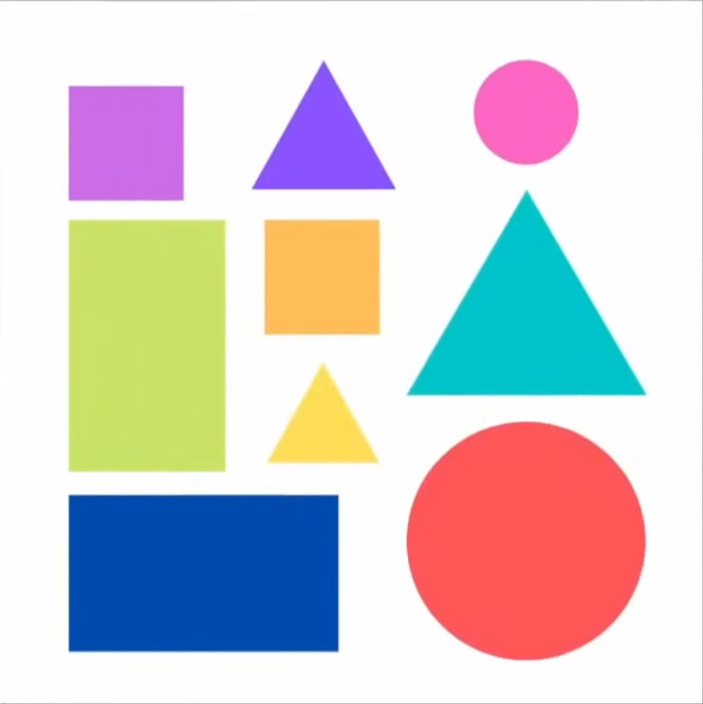
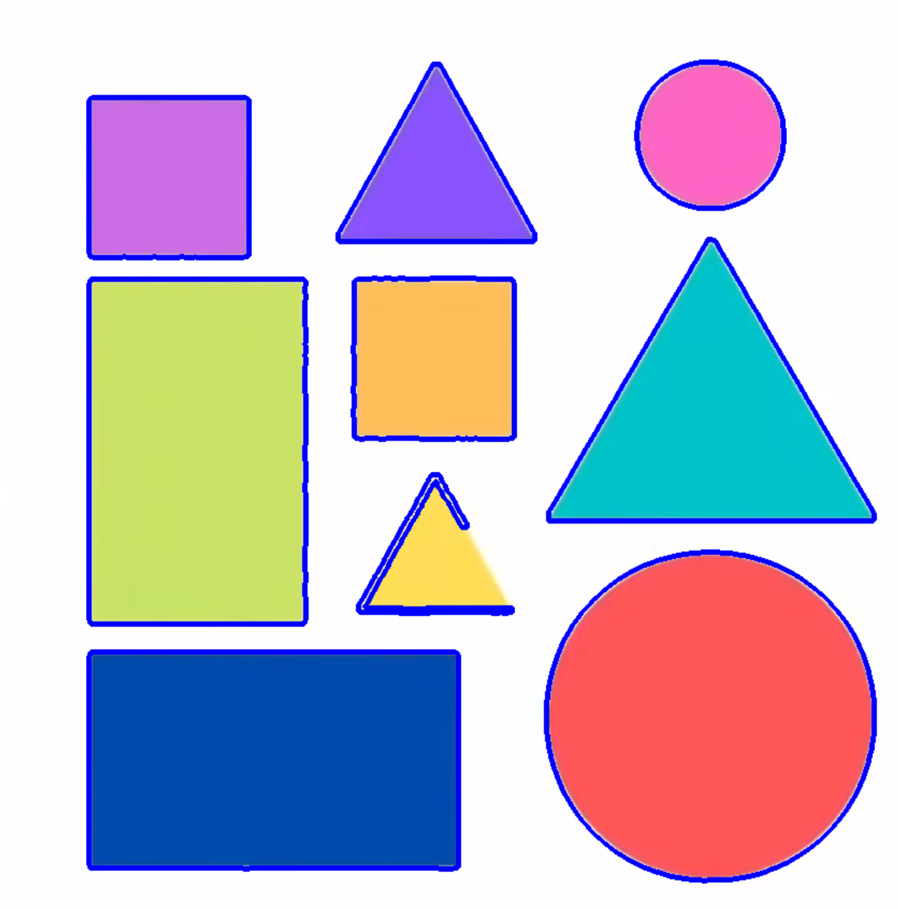
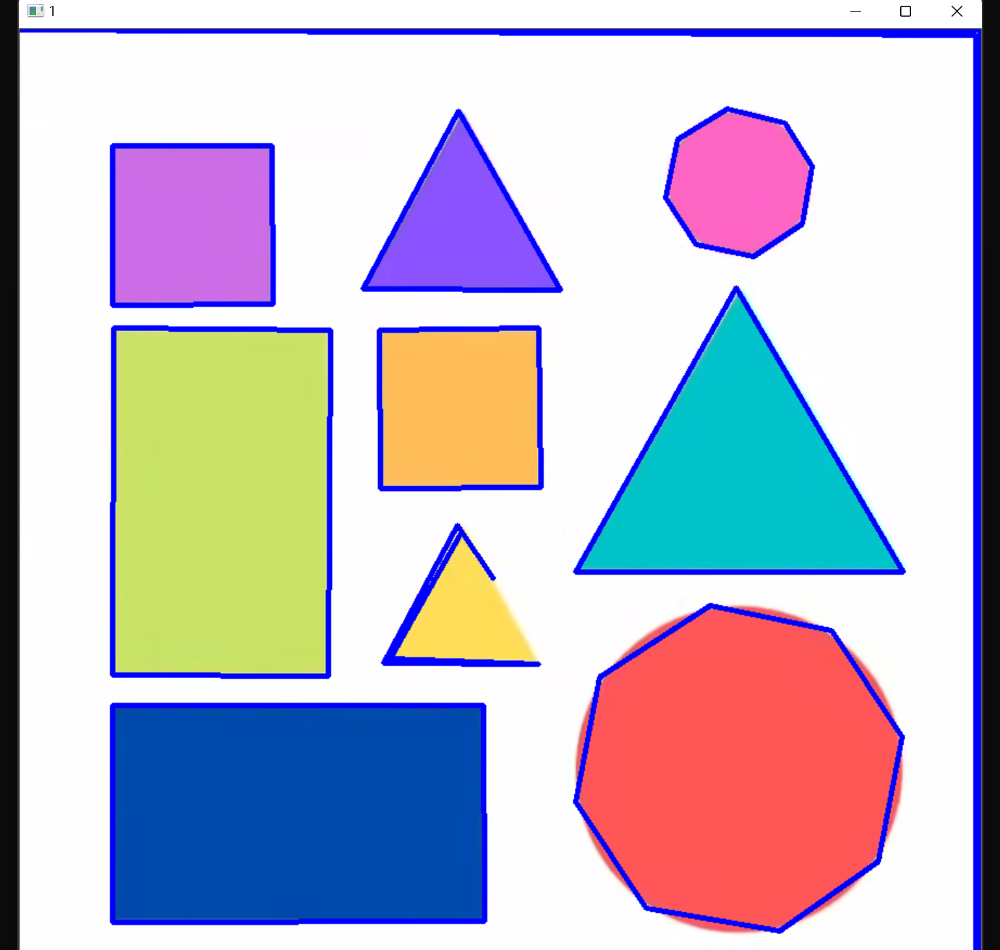
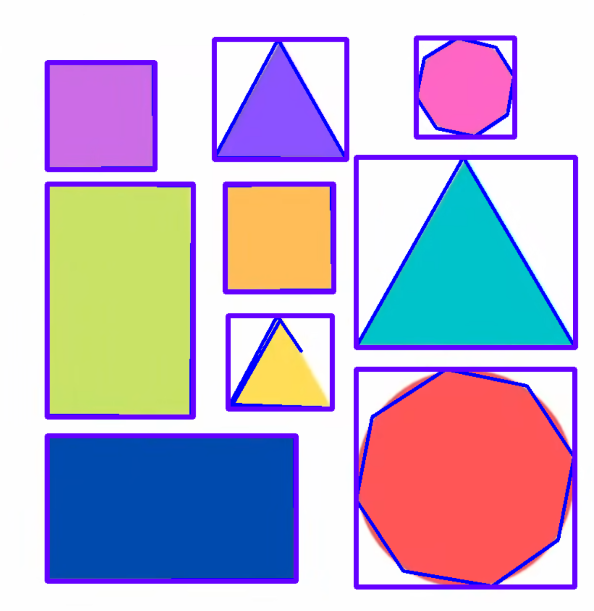

Opencv in Visual Studio C(4)
Opencv with Visual Studio4

这是一个简单的图像，我们尝试来用之检测形状！
轮廓检测
现在我们想要检测形状的轮廓，是需要对图片做出若干预处理的！我们必须保证我们的图片经过开闭运算：
Mat& preWork(Mat& pic)
{
Mat grey, blur, canny, dil, erode;
cvtColor(pic, grey, COLOR_BGR2GRAY);
GaussianBlur(grey, blur, Size(3, 3), 3, 0);
Canny(blur, canny, 25, 75);
Mat kernel = getStructuringElement(MORPH_RECT, Size(3, 3));
dilate(canny, dil, kernel);
imshow("grey", grey);
imshow("blur", blur);
imshow("canny", canny);
imshow("dil", dil);
//imshow("erode", erode);
waitKey(0);
Mat* work = new Mat(dil);
return *work;
} 我们返回的就是经过预处理的图片了！下面开始重点讲轮廓！
我们的轮廓是用点来描述的，轮廓有若干层数，这就需要我们使用 vector
还有层级，这里我们使用 vector< Vec4i >来定义类型！它表明当前的每一个类型有四个整数构成，就不需要我们自己手动指定原生的C++类型了
这里是找到轮廓的函数
findContours(afterPreWork, countours, hierarchy, RETR_EXTERNAL, CHAIN_APPROX_SIMPLE);/** @brief Finds contours in a binary image.
The function retrieves contours from the binary image using the algorithm @cite Suzuki85 . The contours
are a useful tool for shape analysis and object detection and recognition. See squares.cpp in the
OpenCV sample directory.
@note Since opencv 3.2 source image is not modified by this function.
@param image Source, an 8-bit single-channel image. Non-zero pixels are treated as 1's. Zero
pixels remain 0's, so the image is treated as binary . You can use #compare, #inRange, #threshold ,
#adaptiveThreshold, #Canny, and others to create a binary image out of a grayscale or color one.
If mode equals to #RETR_CCOMP or #RETR_FLOODFILL, the input can also be a 32-bit integer image of labels (CV_32SC1).
@param contours Detected contours. Each contour is stored as a vector of points (e.g.
std::vector<std::vector<cv::Point> >).
@param hierarchy Optional output vector (e.g. std::vector<cv::Vec4i>), containing information about the image topology. It has
as many elements as the number of contours. For each i-th contour contours[i], the elements
hierarchy[i][0] , hierarchy[i][1] , hierarchy[i][2] , and hierarchy[i][3] are set to 0-based indices
in contours of the next and previous contours at the same hierarchical level, the first child
contour and the parent contour, respectively. If for the contour i there are no next, previous,
parent, or nested contours, the corresponding elements of hierarchy[i] will be negative.
@param mode Contour retrieval mode, see #RetrievalModes
@param method Contour approximation method, see #ContourApproximationModes
@param offset Optional offset by which every contour point is shifted. This is useful if the
contours are extracted from the image ROI and then they should be analyzed in the whole image
context.
*/
CV_EXPORTS_W void findContours( InputArray image, OutputArrayOfArrays contours,
OutputArray hierarchy, int mode,
int method, Point offset = Point());
/** @overload */
CV_EXPORTS void findContours( InputArray image, OutputArrayOfArrays contours,
int mode, int method, Point offset = Point());
/** @example samples/cpp/squares.cpp
A program using pyramid scaling, Canny, contours and contour simplification to find
squares in a list of images (pic1-6.png). Returns sequence of squares detected on the image.
*/
/** @example samples/tapi/squares.cpp
A program using pyramid scaling, Canny, contours and contour simplification to find
squares in the input image.
*/ 这里是一些参数的文档
enum RetrievalModes {
/** retrieves only the extreme outer contours. It sets `hierarchy[i][2]=hierarchy[i][3]=-1` for
all the contours. */
RETR_EXTERNAL = 0,
/** retrieves all of the contours without establishing any hierarchical relationships. */
RETR_LIST = 1,
/** retrieves all of the contours and organizes them into a two-level hierarchy. At the top
level, there are external boundaries of the components. At the second level, there are
boundaries of the holes. If there is another contour inside a hole of a connected component, it
is still put at the top level. */
RETR_CCOMP = 2,
/** retrieves all of the contours and reconstructs a full hierarchy of nested contours.*/
RETR_TREE = 3,
RETR_FLOODFILL = 4 //!<
};enum ContourApproximationModes {
/** stores absolutely all the contour points. That is, any 2 subsequent points (x1,y1) and
(x2,y2) of the contour will be either horizontal, vertical or diagonal neighbors, that is,
max(abs(x1-x2),abs(y2-y1))==1. */
CHAIN_APPROX_NONE = 1,
/** compresses horizontal, vertical, and diagonal segments and leaves only their end points.
For example, an up-right rectangular contour is encoded with 4 points. */
CHAIN_APPROX_SIMPLE = 2,
/** applies one of the flavors of the Teh-Chin chain approximation algorithm @cite TehChin89 */
CHAIN_APPROX_TC89_L1 = 3,
/** applies one of the flavors of the Teh-Chin chain approximation algorithm @cite TehChin89 */
CHAIN_APPROX_TC89_KCOS = 4
};
上面是一些具体的参数说明！
我们的findCountours 取到轮廓之后呢，就向我们传入空的轮廓和层级输入数据。随后，我们在 原图像（很重要，不要画在二值化后的图里去了！！！）绘制轮廓，这样就好了！
Mat& receiveCountours(Mat& afterPreWork,Mat& org)
{
vector<vector<Point>> countours;
vector<Vec4i> hierarchy;
findContours(afterPreWork, countours, hierarchy, RETR_EXTERNAL, CHAIN_APPROX_SIMPLE);
Mat* workMat = new Mat(org);
drawContours(*workMat, countours, -1, Scalar(255, 0, 0), 3);
return *workMat;
}

但是一些原因我们的图片可能是有多个绘制的，他们是由图片的噪点 造成的，我们现在使用面积筛选法筛选！
Mat& receiveCountours(Mat& afterPreWork,Mat& org)
{
vector<vector<Point>> countours;
vector<Vec4i> hierarchy;
findContours(afterPreWork, countours, hierarchy, RETR_EXTERNAL, CHAIN_APPROX_SIMPLE);
Mat* workMat = new Mat(org);
for (int i = 0; i < countours.size(); i++) {
auto area = contourArea(countours[i]);
cout << area << endl;
if (area > 1000) {
drawContours(*workMat, countours, i, Scalar(255, 0, 0), 3);
}// 第I个轮廓满足！
}
}
下面呢，我们使用矩形将找到的形状括起来！这就需要我们：
/** @brief Calculates a contour perimeter or a curve length.
The function computes a curve length or a closed contour perimeter.
@param curve Input vector of 2D points, stored in std::vector or Mat.
@param closed Flag indicating whether the curve is closed or not.
*/
CV_EXPORTS_W double arcLength( InputArray curve, bool closed );double peri = arcLength(countours[i], true); 以及我们之后可能需要通过多少个角点来判定他们是什么，就需要我们：
/** @brief Approximates a polygonal curve(s) with the specified precision.
The function cv::approxPolyDP approximates a curve or a polygon with another curve/polygon with less
vertices so that the distance between them is less or equal to the specified precision. It uses the
Douglas-Peucker algorithm <http://en.wikipedia.org/wiki/Ramer-Douglas-Peucker_algorithm>
@param curve Input vector of a 2D point stored in std::vector or Mat
@param approxCurve Result of the approximation. The type should match the type of the input curve.
@param epsilon Parameter specifying the approximation accuracy. This is the maximum distance
between the original curve and its approximation.
@param closed If true, the approximated curve is closed (its first and last vertices are
connected). Otherwise, it is not closed.
*/
CV_EXPORTS_W void approxPolyDP( InputArray curve,
OutputArray approxCurve,
double epsilon, bool closed ); 为此，我们需要一个跟轮廓一个数据结构的大小来接受结果，随后用之来绘制轮廓，那就是：
Mat& receiveCountours(Mat& afterPreWork,Mat& org)
{
vector<vector<Point>> countours;
vector<Vec4i> hierarchy;
findContours(afterPreWork, countours, hierarchy, RETR_EXTERNAL, CHAIN_APPROX_SIMPLE);
Mat* workMat = new Mat(org);
vector<vector<Point>> conPoly(countours.size());
for (int i = 0; i < countours.size(); i++) {
auto area = contourArea(countours[i]);
cout << area << endl;
if (area > 1000) {
double peri = arcLength(countours[i], true);
approxPolyDP(countours[i], conPoly[i], 0.02 * peri, true);
drawContours(*workMat, conPoly, i, Scalar(255, 0, 0), 3);
}
}
return *workMat;
}
而框住矩形是由给出：
/** @brief Calculates the up-right bounding rectangle of a point set or non-zero pixels of gray-scale image.
The function calculates and returns the minimal up-right bounding rectangle for the specified point set or
non-zero pixels of gray-scale image.
@param array Input gray-scale image or 2D point set, stored in std::vector or Mat.
*/
CV_EXPORTS_W Rect boundingRect( InputArray array ); 函数每一次扫描ConPoly后返回最小矩形，我们用一个vector< Rect >接受就好了
Mat& receiveCountours(Mat& afterPreWork,Mat& org)
{
vector<vector<Point>> countours;
vector<Vec4i> hierarchy;
findContours(afterPreWork, countours, hierarchy, RETR_EXTERNAL, CHAIN_APPROX_SIMPLE);
Mat* workMat = new Mat(org);
vector<vector<Point>> conPoly(countours.size());
vector<Rect> boundRect(countours.size());
for (int i = 0; i < countours.size(); i++) {
auto area = contourArea(countours[i]);
cout << area << endl;
if (area > 1000) {
double peri = arcLength(countours[i], true);
approxPolyDP(countours[i], conPoly[i], 0.02 * peri, true);
boundRect[i] = boundingRect(conPoly[i]);
drawContours(*workMat, conPoly, i, Scalar(255, 0, 0), 3);
rectangle(*workMat, boundRect[i].tl(), boundRect[i].br(), Scalar(255, 0, 100),5);
}
}

全体目光向我看齐，我宣布个事！是我Charliechen写的这篇文章！(?)